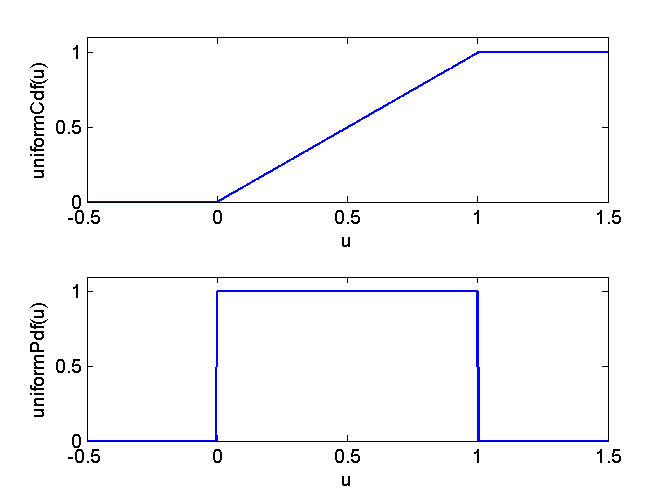

Contents
function demo_rand
demo_rand: Demo for the use of rand
format short
generate U ~ U[0,1]
rand
ans =
0.1058
generate a new sample U ~ U[0,1]
rand
ans =
0.3498
generate a matrix with M rows and N columns of U ~ U[0,1]
M = 3;
N = 5;
rand(M,N)
ans =
0.0504 0.3766 0.4108 0.0929 0.9356
0.5517 0.9313 0.2117 0.8706 0.6406
0.8069 0.3040 0.4107 0.3318 0.0625
Reproducible results
s0 = rand('state');
rand
rand
ans =
0.4565
ans =
0.6978
Generate the same sequence
rand('state',s0);
rand
rand
ans =
0.9501
ans =
0.2311
Plot pdf and cdf
nPlot = 1000;
xPlot = linspace(-0.5,1.5,nPlot);
axisPlot = [-0.5 1.5 0 1.1];
uniformPdf = zeros(size(xPlot));
uniformPdf((xPlot>=0) & (xPlot<=1)) = 1;
subplot(2,1,2);
plot(xPlot,uniformPdf)
xlabel('u'); ylabel('uniformPdf(u)')
axis(axisPlot)
uniformCdf = uniformPdf.*xPlot + (xPlot >=1);
subplot(2,1,1);
plot(xPlot,uniformCdf)
xlabel('u'); ylabel('uniformCdf(u)')
axis(axisPlot)
